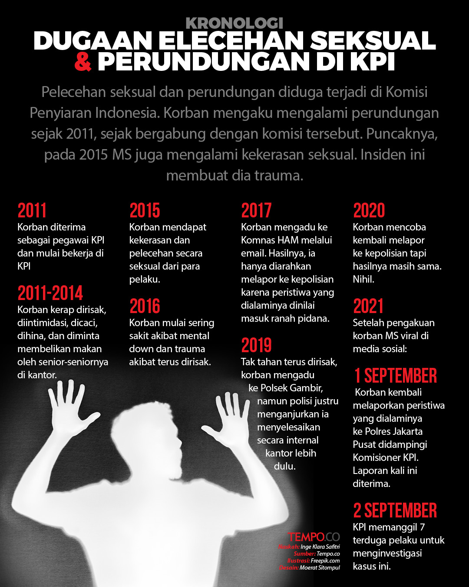

Kekerasan Seksual
Menurut psychology today, Pelecehan seksual adalah setiap aktivitas seksual yang terjadi tanpa persetujuan. Juga disebut sebagai serangan seksual atau kekerasan seksual, termasuk sentuhan seksual yang tidak diinginkan, seks oral paksa, dan pemerkosaan, di antara tindakan seksual lainnya.
Kekerasan seksual adalah masalah yang meluas. Pelecehan tersebut dapat menyebabkan keterkejutan, ketakutan , kesedihan, dan dalam beberapa kasus, gangguan kecemasan atau depresi.
Rintangan pribadi, sosial, dan hukum sering kali menghalangi para penyintas untuk mengungkapkan pelecehan tersebut dan menerima bantuan yang layak mereka terima. Meskipun gerakan #MeToo dan diskusi nasional yang terjadi kemudian membantu mengatasi pelecehan dan penyerangan seksual, jalan masih panjang untuk menciptakan perubahan budaya dan menghentikan kekerasan seksual.
Kekerasan seksual adalah masalah yang meluas. Di Amerika, satu dari tiga wanita dan satu dari empat pria mengalami kekerasan seksual dalam hidup mereka, menurut National Institutes of Health. Dan angka-angka itu kemungkinan besar diremehkan karena rasa malu dan takut yang mencegah banyak penyintas melaporkan pelecehan.
Bagaimana profil pelaku pelecehan seksual?
Pelaku kekerasan seksual cenderung mengenal korban, pernah melakukan kejahatan atau tindakan agresi di masa lalu, dan mereka cenderung orang dewasa, karena lebih dari setengahnya berusia di atas 30 tahun, menurut RAINN. Beberapa mungkin memiliki kondisi kesehatan mental seperti gangguan kepribadian antisosial tetapi sebagian besar tidak. Tidak ada profil tunggal bagi orang yang melakukan pelecehan seksual. Pengaruh sosial dan budaya juga berperan—khususnya mengapa laki-laki melakukan kekerasan seksual terhadap perempuan. Masyarakat cenderung mengagungkan kekerasan, mengobjektifikasi tubuh perempuan dan laki-laki, dan merangkul skrip budaya dan norma kelompok. Menantang norma-norma ini secara komunal dan politis dapat membantu mengubah prevalensi kekerasan seksual yang meresahkan saat ini.
Pria yang melakukan pelecehan seksual cenderung mendapat skor lebih tinggi pada pengukuran sifat kepribadian Tiga Serangkai Kegelapan seperti narsisme, Machiavellianisme, dan psikopati. Mereka juga cenderung bekerja di bidang yang didominasi laki-laki dan umumnya memiliki sikap bermusuhan terhadap perempuan. Tetapi penelitian menemukan bahwa mereka juga memiliki pelepasan moral — perasaan bahwa tindakan mereka dibenarkan, penggunaan istilah eufemistik untuk tindakan mereka, pengalihan tanggung jawab ("itu adalah budaya di sini"), perbandingan yang menguntungkan ("Saya bisa melakukan lebih buruk") , dan menyalahkan korban.
Laki-laki bisa menjadi korban
Satu dari enam pria akan mengalami kekerasan seksual dalam hidup mereka, menurut Pusat Pengendalian dan Pencegahan Penyakit. (Tetapi statistik kekerasan seksual sering meremehkan prevalensi sebenarnya karena kurangnya pelaporan.) Serangan seksual terjadi sebelum usia 18 tahun untuk 94 persen korban laki-laki, menurut sebuah studi tahun 2009 terhadap lebih dari 700 laki-laki di Virginia. Meskipun gerakan #MeToo mengantarkan gelombang atau kemajuan untuk mengatasi kekerasan seksual, sebagian besar laki-laki tidak diikutsertakan dalam diskusi nasional.
Bahaya Kekerasan Seksual
Kekerasan seksual bisa menjadi traumatis . Dalam dua minggu setelah penyerangan, 94 persen wanita dalam satu penelitian dilaporkan mengalami gejala gangguan stres pasca-trauma seperti kilas balik, insomnia , kewaspadaan berlebihan, dan penghindaran. Mereka juga bergumul dengan kemarahan , kecemasan, dan depresi . Namun hingga 90 persen orang yang selamat dapat pulih secara alami seiring berjalannya waktu, saran penelitian. Profesional kesehatan mental selalu tersedia untuk membantu memproses pengalaman menyakitkan ini.
Terlepas dari kesadaran akan pelecehan yang meluas di lingkungan seperti Gereja Katolik, Pramuka, dan tim olahraga perguruan tinggi, pria menghadapi tantangan berbeda yang muncul dengan tuduhan pelecehan seksual. Semua korban kekerasan seksual berhadapan dengan rasa malu dan hinaan , tetapi laki-laki menghadapi lapisan stigma ekstra karena gagasan budaya tentang maskulinitas. Laki-laki mungkin percaya bahwa mereka seharusnya "cukup kuat" atau "cukup jantan" untuk melawan pemangsa atau menghindari serangan. Mitos budaya seperti “laki-laki selalu ingin berhubungan seks” dapat mencegah laki-laki berbicara tentang pelecehan tersebut.
Pelecehan seksual seringkali tetap tersembunyi karena kombinasi penyangkalan , manipulasi, dan kebingungan. Korban kekerasan seksual mungkin tidak melapor karena takut akan pembalasan, takut tidak dipercaya, atau takut mengalami trauma lebih lanjut. Mereka mungkin bergumul dengan rasa malu dan akibatnya menyalahkan diri sendiri karena "berada di tempat yang salah" atau tidak "melarikan diri". Korban juga harus bersaing dengan bias kognitif yang menginformasikan keyakinan orang lain saat mengungkapkan penyerangan. Orang ingin percaya bahwa dunia adalah tempat yang aman, dan mungkin secara psikologis lebih mudah untuk menyalahkan korban (“Yah, dia seharusnya tidak lari sendirian di malam hari”) daripada menerima bahwa pelecehan yang tiba-tiba bisa terjadi pada siapa saja.
Orang mungkin juga percaya bahwa pelaku pada dasarnya jahat, jadi tuduhan terhadap individu seperti Larry Nasser atau Bill Cosby, yang orang lain katakan sebagai orang baik tidak dianggap serius. Bias ini dan lainnya memicu siklus menyalahkan korban yang menyulitkan penyintas untuk maju setelah penyerangan.
Pertolongan kepada Korban Kekerasan Seksual
Kekuatan yang kuat sering kali mencegah penyintas untuk mengungkapkan atau melaporkan pelecehan seksual, dari rasa takut akan pembalasan hingga potensi menghidupkan kembali serangan traumatis. Tetapi ketika para penyintas memutuskan untuk maju, dukungan yang tak tergoyahkan dari teman dan anggota keluarga dapat membantu mereka memproses pengalaman dan bergerak maju.
Hal terpenting yang harus dilakukan adalah mendengarkan dan mempercayai orang yang Anda cintai. Validasi emosi mereka, ajukan pertanyaan, dan hindari penilaian. Bantu mereka menjelajahi opsi dan sumber daya, seperti mencari pertolongan medis, melaporkan kejahatan, menelepon hotline penyalahgunaan, atau mencari terapi. Meskipun Anda mungkin memiliki pendapat yang kuat, kesampingkan itu—orang yang selamat harus membuat setiap keputusan untuk diri mereka sendiri ketika mereka merasa siap untuk melakukannya.
Contoh Kasus Kekerasan Seksual
Berikut contoh kasus Kekerasan Seksual di indonesia yang viral
Kekerasan Seksual Korban Laki-Laki Inisial MS di lingkungan Kerja Komisi Penyiaran Indonesia (KPI) kasus viiral titter 2021

Setelah mengalami kekerasan seksual bertahun-tahun yang dipendam dan mengalami PSTD oleh seniornya (terduga 7 orang laki laki, yang sebenarnya ada 1o orang) di tempat kerja, MS memberanikan diri untuk menceritakan hal ini di twitter dan menceritakan kronologis kejadian karena sebelumnya tidak mendapat perlindungan/hasilnya nihil ketika melapor kepada pihak kepolisian,
Salah satu pelakuan keji yang dilakukan pelaku adalah mencoret alat vital korban. ketika kembali melaporpun mendapatkan kendala/ancaman. kondisi terakhir korban terdiagnosis oleh psikiater anxiety disorder, depresi mayor. Gangguan lambung gasritis karena kasusnya masih gantung dan diketahui korban lain ada 9 orang. Korban telah dipindahkan ke kominfo.
Referensi
- https://www.psychologytoday.com/ca/basics/sexual-abuse
- https://www.psychologytoday.com/us/basics/sex/sexual-harassment-and-violence
- https://grafis.tempo.co/read/2794/kronologi-dugaan-pelecehan-seksual-dan-perundungan-terhadap-pegawai-kpi
- https://www.youtube.com/watch?v=IAWQpu2pnUY